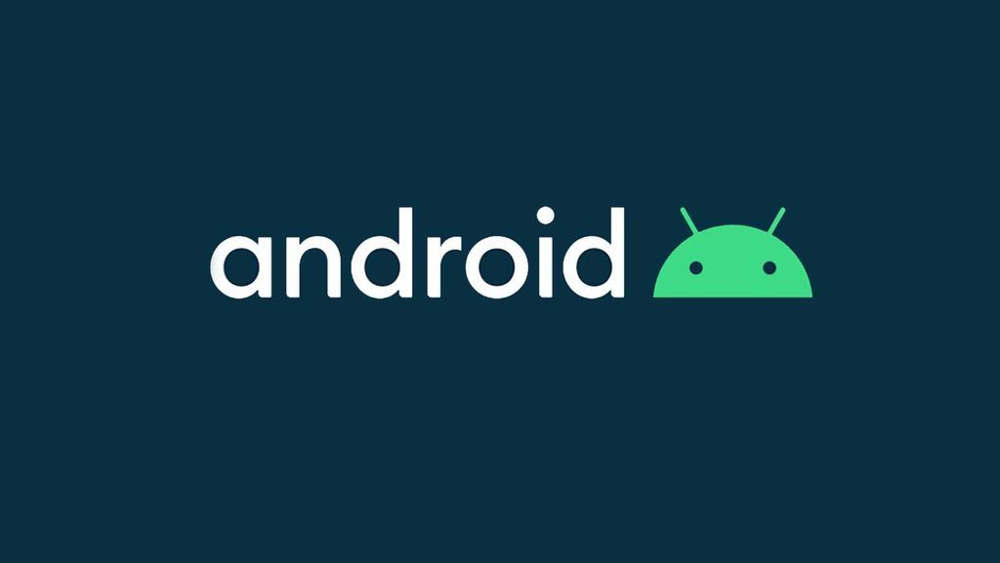
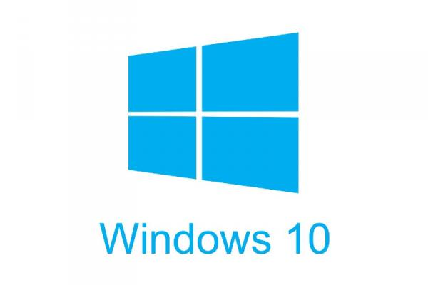
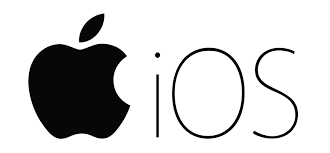
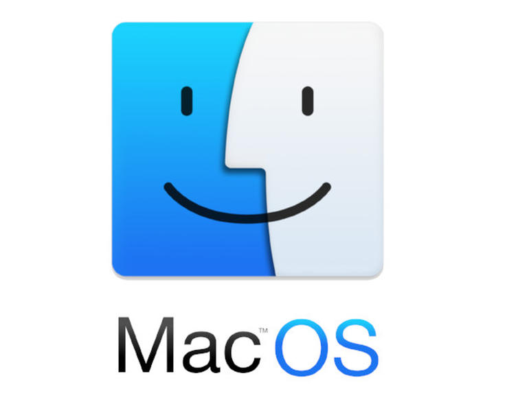

Operating System atau biasa disingkat 'OS' adalah sebuah software yang memungkinkan seorang user untuk menjalankan berbagai aplikasi dalam perangkat komputasinya. Operating system memiliki berbagai fungsi, seperti: membantu komputer untuk mengatur kerja hardware, mengatur peripheral (seperti mouse dan keyboard), dan masih banyak lagi. Saat ini, ada banyak operating system yang digunakan di berbagai perangkat. Namun, berikut adalah beberapa operating system yang paling banyak digunakan oleh perangkat komputasi di dunia:
1. Android

2. Windows

3. iOS

4. MacOS

MacOS adalah operating system yang dibuat oleh perusahaan Apple. Operating system ini digunakan pada perangkat desktop maupun laptop milik Apple, seperti MacBook dan iMac. Saat ini, versi terbaru dari MacOS yang telah dirilis adalah MacOS Big Sur.
klik untuk balik ke atas